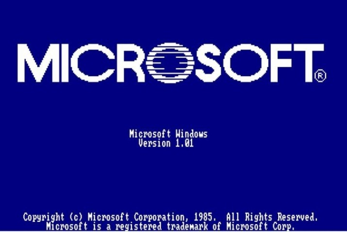
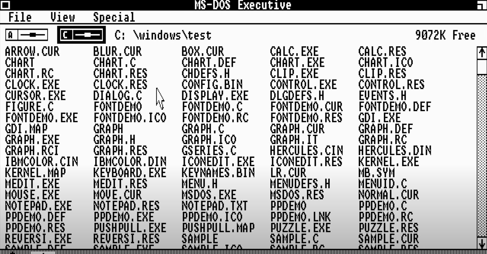
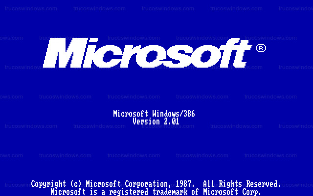
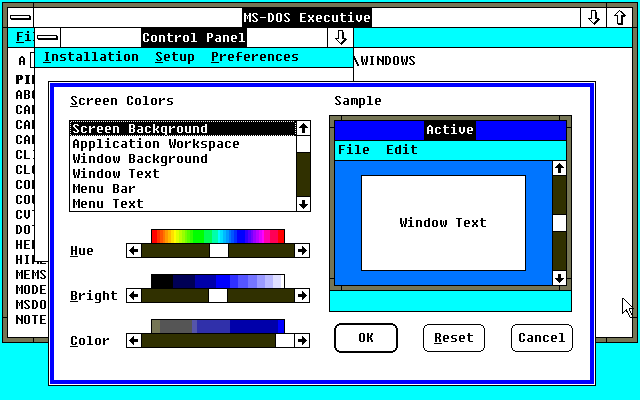
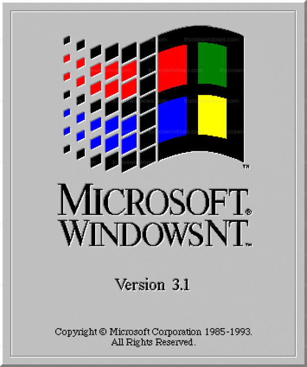

Principales versiones de Windows a través de los años
1985: Windows 1.0
Microsoft Windows 1.0 (en realidad 1.01) fué el primer entorno gráfico desarrollado por Microsoft Corporation y lanzado el 20 de noviembre de 1985. Fue el primer intento de Microsoft de implementar un ambiente operativo multitarea (aunque con limitaciones) con interfaz de usuario gráfica en la plataforma de PC. No era un sistema operativo real, sino un entorno gráfico que funcionaba encima de DOS
Este producto data de 1981, se realizó cuando Microsoft inició un proyecto llamado Interfaces Manager, cuya idea original le corresponde a Bill Gates y se basó en una aplicación de interfaz gráfico de usuario denominada VisiON. El nombre original del proyecto fue visto como muy poco comercial, por lo cual se terminó desechando, y siendo reemplazado por el nombre de Microsoft Windows. Fue presentado al público de manera oficial el 10 de noviembre de 1983. En la caja azul se anunciaba un PC con la interfaz gráfica de Windows, con varias ventanas pegadas unas a otras. La estrategia de venta de Microsoft para Windows era proporcionar un nuevo ambiente de desarrollo y un nuevo entorno de software en el que se utilizan imágenes de mapa de bits y un ratón, liberando así al usuario del método MS-DOS que consistía en escribir comandos en el indicador del disco (C:\)
1987: Windows 2.0
Windows 2.0, precisamente Windows 2.03 es una versión del entorno operativo obsoleto creado por Microsoft con una interfaz gráfica de usuario de 16 bits, que fue lanzado el 9 de diciembre de 1987 y es el sucesor de Microsoft Windows 1.0. Microsoft Windows 2.0 fue continuado con las posteriores ediciones 2.1x , más conocidas como Microsoft Windows/286 y Microsoft Windows/386, extendidas para los procesadores 80286 y 80386, quienes a su vez fueron reemplazados por Microsoft Windows 3.0 en mayo de 1990; no obstante, Windows 2.0 recibió actualizaciones y soporte por parte de Microsoft durante catorce años hasta el 31 de diciembre de 2001, cuando dejó de recibir soporte técnico.
Windows 2.0 permitía, por primera vez, a las ventanas de aplicación superponerse entre sí; a diferencia de su predecesor, Windows 1.0 , el cual podía mostrar solo las ventanas en mosaico vertical y horizontal. Windows 2.0 también introdujo más sofisticados métodos abreviados de teclado (y la terminología de "Minimizar" y "Maximizar", en contraposición a "iconize" y "Zoom" en Windows 1.0). La configuración de ventanas que presentaba este sistema duraría inclusive con la introducción de Windows 3.1. Al igual que Windows 1.x, las aplicaciones de Windows 2.x no pueden ejecutarse en Windows 3.1 o sistemas posteriores, ya que no fueron diseñados para el modo protegido .
1993: Windows NT

Windows NT (Windows New Technology) es una familia de sistemas operativos producidos por Microsoft, de la cual la primera versión fue publicada en julio de 1993. Previamente a la aparición de Windows 95 la empresa Microsoft concibió una nueva línea de sistemas operativos orientados a estaciones de trabajo y servidor de red. Un sistema operativo con interfaz gráfica propia, estable y con características similares a los sistemas de red UNIX. Las letras NT provienen de la designación del producto como "Nueva Tecnología" (New Technology). A partir de Windows 2000, "NT" se eliminó del nombre del producto y solo se incluye en la cadena de versión del producto junto con varios lugares de bajo nivel dentro del sistema.
Windows 3.0 se originó en 1988 cuando David Weise y Murray Sargent decidieron desarrollar independientemente una versión de Windows en modo protegido como un experimento. Juntos realizaron un prototipo y se lo presentaron a los ejecutivos de la compañía, quienes se impresionaron lo suficiente como para aprobarlo como proyecto oficial.
Windows 3.0 sucedió a Windows 2.1x e incluyó una interfaz de usuario significantemente mejorada, además de incluir varias mejoras técnicas para hacer un mejor uso de las capacidades de administración de memoria de los procesadores 286 y 386 de Intel. Ahora los programas en modo texto pueden ejecutarse en una ventana — una característica disponible de forma más limitada en Windows/386 2.1x — haciendo el sistema usable como base multitarea para programas heredados. Sin embargo, esto tenía un uso muy limitado en el mercado doméstico, donde la mayoría de juegos y programas de entretenimiento seguían usando MS-DOS.